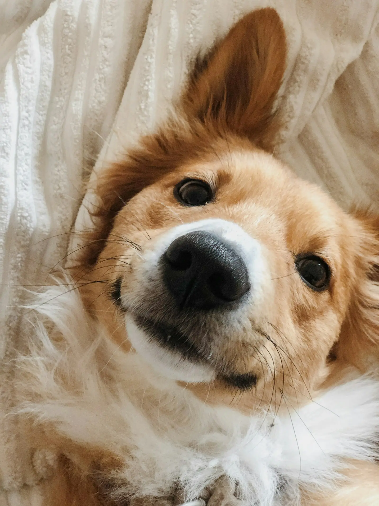
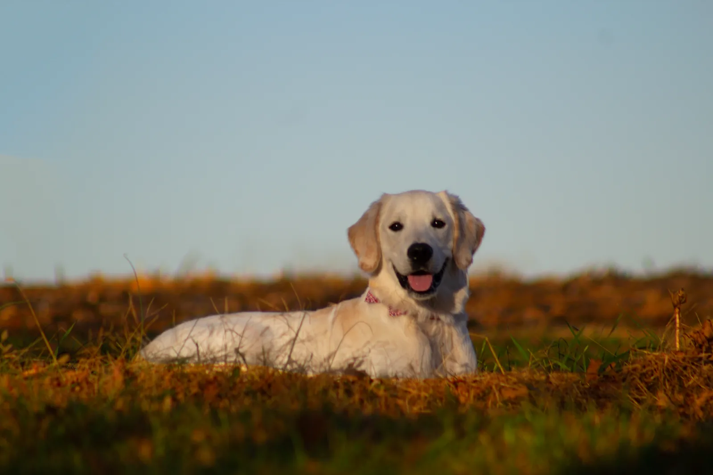
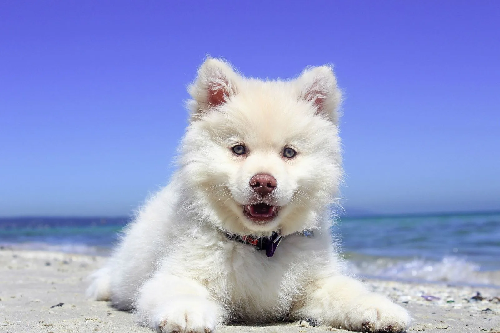
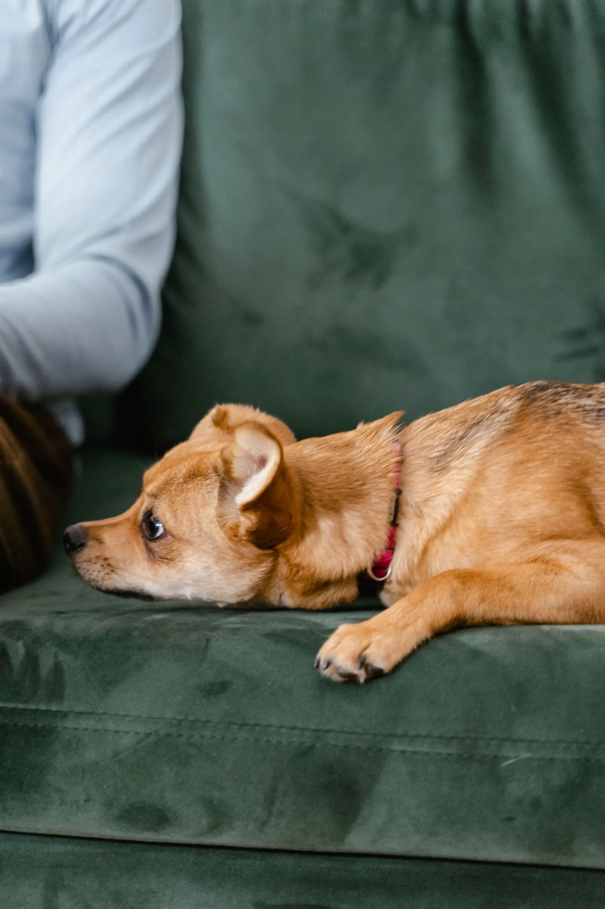
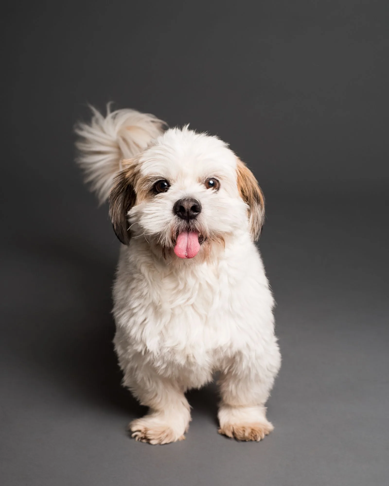
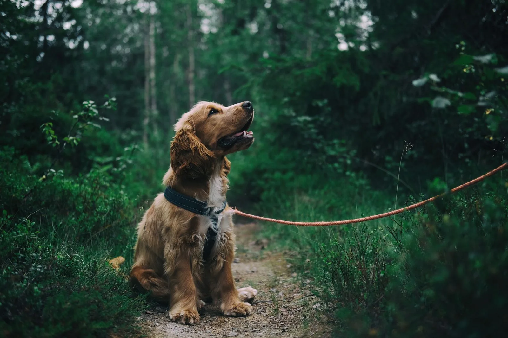
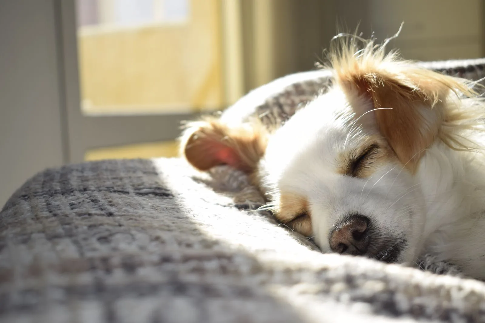
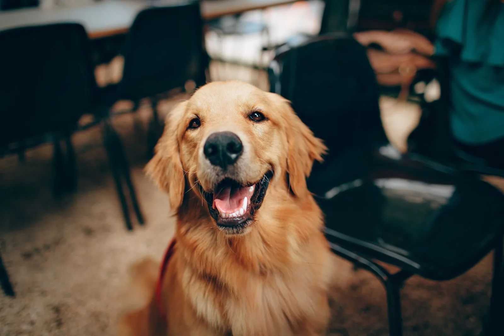
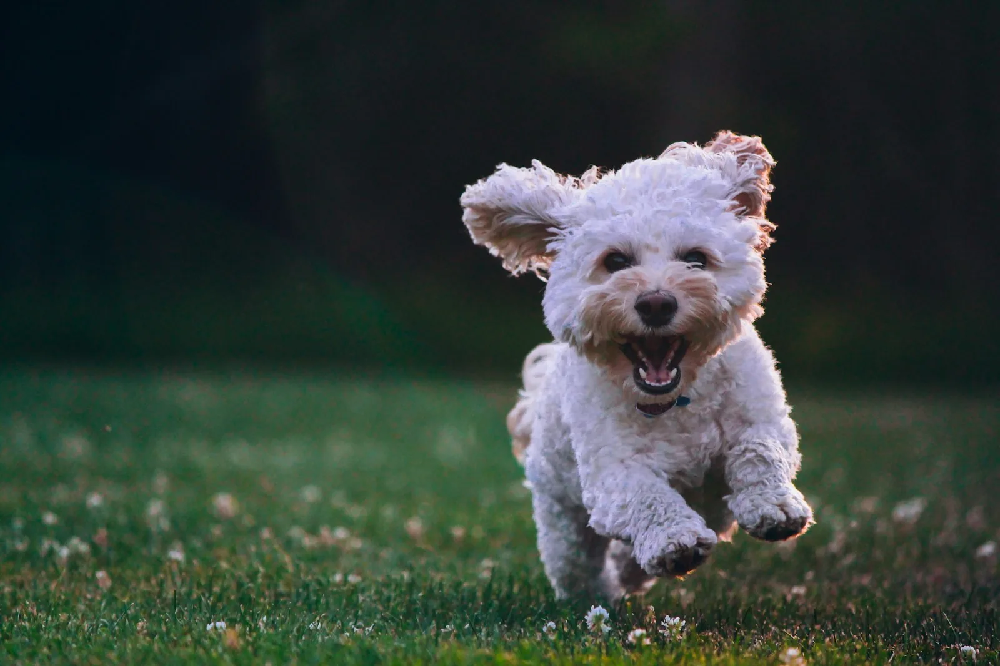
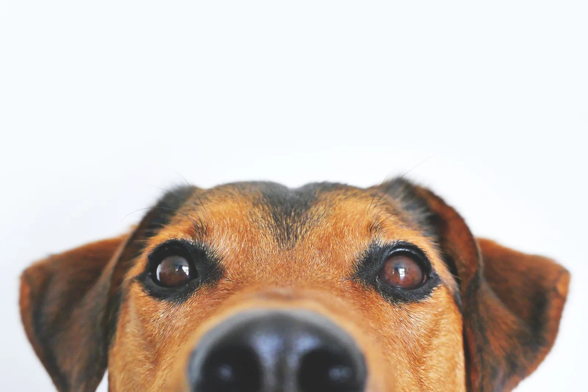

Baths
A thorough wash and dry, finished with a neat tidy-up so your dog heads home clean and soft.
142 W Water St · Chillicothe, Ohio
Pampered Paws is a one-on-one grooming salon where your dog gets Megan's full attention — no crowded kennels, no rushing, just a quiet groom tailored to your dog.
By appointment — text or call to book.


1 : 1
One groomer, one dog, the whole appointment.

Meet your groomer
Pet parents call her "auntie Megan," and many have trusted her with their dogs for years. She grooms one dog at a time, so every bath, cut, and nail trim happens at your dog's pace — never on a conveyor belt of appointments.
That unhurried approach is why so many long-term clients stay: their dogs walk in knowing the routine, the voice, and the hands — and walk out clean, neatly trimmed, and smelling good for weeks.
What Megan does
Every groom is one-on-one. Tell Megan about your dog's coat, skin, and temperament when you book, and the appointment is shaped around them.

A thorough wash and dry, finished with a neat tidy-up so your dog heads home clean and soft.

Precise, breed-aware cuts shaped to your dog — neat ears, tidy paws, and a finish that lasts.

Careful nail trims, done gently and patiently — a regular part of every groom or on their own.

Slower, softer handling for older dogs — extra breaks, gentle support, and all the patience they need.

A quiet room, one dog at a time, and a groomer who reads the signals — specialist care for nervous and reactive dogs.

A special anti-itch shampoo for dogs with itchy, sensitive skin — ask about it when you book.
Prices on request — text or call and Megan will confirm what your dog's groom includes.
Gentle care, on purpose
Senior dogs, anxious dogs, reactive dogs — these are the dogs Megan is known for. The whole salon is set up around them: one dog at a time, a calm room, and no surprises.

How a visit works
Reach Megan on 740-649-7228 and tell her about your dog — coat, temperament, and anything she should know.
Come to 142 W Water St in Chillicothe. The double-door entry keeps every arrival safe and calm.
Your dog gets Megan's full attention — bath, cut, and nails at their own pace.
Pick up a clean, neatly trimmed dog — and maybe a turn in the shop's mini portrait studio.
Why pet parents choose Pampered Paws
Pet parents describe the same things again and again about their visits. Here's what comes up most.
Many clients have trusted Megan with their dogs for years — she knows each dog by name, coat, and quirk.
Senior, anxious, and reactive dogs get gentle, patient handling in a quiet one-on-one room.
Careful trims and tidy finishes — and dogs that smell good for weeks after their groom.
Clean, secure, and adorable, with personal touches like the mini portrait studio.
Fresh from the groom
These are illustrative groomed-dog portraits — they show the kind of happy, freshly groomed finish to expect. They are not photos of this salon's own dogs.
Before you visit
Please make sure your dog's rabies vaccination is up to date before their appointment.
Weekend appointments are mentioned in the salon's policies — ask about weekend availability when you book.
The shop's double-door security entry means dogs stay safely inside from arrival to pick-up.
Megan coordinates with vet records where needed — bring any details that matter for your dog's care.
Visit the salon
Also listed on Pawfinity: contact page · reviews page
Questions, answered
Yes — the salon is appointment-based. Text or call 740-649-7228 to book a time for your dog.
Alone. Every appointment is one-on-one, so your dog is the only dog being groomed during their visit.
Yes — gentle care for senior, anxious, and reactive dogs is a speciality here. Tell Megan about your dog when you book so the appointment can be paced for them.
No — teeth brushing is not offered. Grooming covers baths, cuts, and nails, plus the special anti-itch shampoo.
A current rabies vaccination is required. If your vet holds records that matter for your dog's care, Megan coordinates with those records where needed.
142 W Water St, Chillicothe, OH 45601. The shop has a double-door security entry, and weekend appointments are mentioned in the salon's policies — ask about them when you book.
Book a visit
Fill this in and it opens an email to the salon with your details filled in — or skip the form and just text or call.
Appointments are by text or call. The form below simply drafts the email for you.